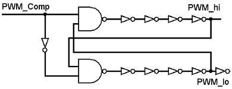
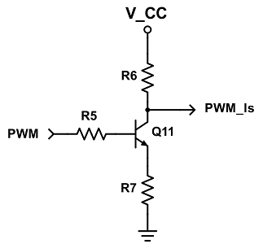
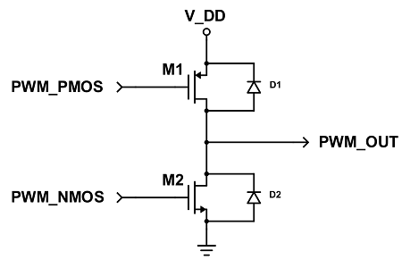
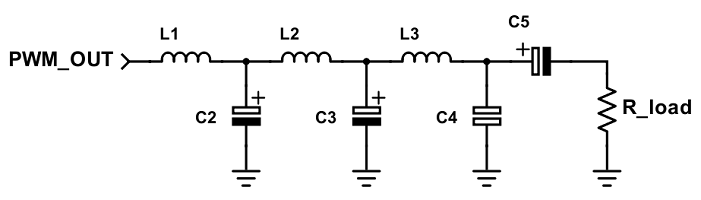

<!DOCTYPE html>
<html lang="en">

<head>
    <meta charset="UTF-8">
    <meta name="viewport" content="width=device-width, initial-scale=1.0">
    <meta http-equiv="X-UA-Compatible" content="ie=edge">
    <title>Design - Half-bridge Class D amplifier design</title>
    <link rel="stylesheet" href="css/style.css" />
    <link href="https://fonts.googleapis.com/css?family=Lato:400,700" rel="stylesheet">
</head>

<body>
    <header>
        <div class="content-area">
            <div class="container header-container">
                <a href="./index.html" id="logo">Half-bridge Class D amplifier design</a>
                <nav>
                    <a href="./index.html">Home</a>
                    <a href="./design.html" class="active">The design</a>
                    <a href="./about.html">About</a>
                </nav>
            </div>
        </div>
    </header>
    <main>
        <section class="content-area top-area">
            <div class="container row space-between">
                <h1 class="top-area-title">The design process</h1>
                <a href="http://uu.diva-portal.org/smash/record.jsf?pid=diva2:1219146" class="btn">Read the full thesis</a>
            </div>
        </section>
        <div class="content-area">
            <div class="container row">
                <div id="design-text">
                    <section>
                        <!-- detta är oklart section??? Fredrik verkar inte kunna sina grejer -->
                        <h2 id="preliminary-design">Preliminary design</h2>
                        <section>
                            <h3 id="triangle-wave-generator">Triangle wave generator</h3>
                            <p>
                                The triangle wave generator shown in figure 7 utilizes two op-amps, one functioning as a non-inverting Schmitt trigger (U1)
                                and the other as an integrator (U2). A Schmitt trigger is essentially a comparator with hysteresis;
                                it outputs a logic value until the input changes sufficiently to trigger a change to the
                                other logic value. "Non-inverting" refers to the output voltage having the same polarity
                                as the input voltage. The Schmitt trigger will output a square wave, which the integrator
                                converts to a triangle wave.
                            </p>
                            <figure>
                                
                                <figcaption>The two op-amp triangle wave generator.</figcaption>
                            </figure>
                            <p>
                                The circuit is able to self-oscillate since the output of the Schmitt trigger must be either low or high when the circuit
                                is powered on; when it is high, the integrator will output a falling ramp and for a low Schmitt
                                trigger output, the integrator will produce a rising ramp. The output of the integrator is
                                fed back to the input of the Schmitt trigger, keeping the oscillation going. The goal was
                                to create a triangle wave with a frequency around 200 kHz or more, as this would fulfill
                                the aforementioned recommendation of a sampling frequency ten times the bandwidth (in this
                                case the audible frequency range). Such a high frequency requires the op-amps to have high
                                enough slew rates and bandwidth.
                            </p>
                        </section>
                        <section>
                            <h3 id="comparator">Comparator</h3>
                            <p>
                                The design of the comparator (fig. 8) was found in [3]. MOSFETs were substituted for BJTs, mostly due to material cost. A
                                tail current for the comparator is generated in the current mirror comprised of Q9, Q10 and
                                R4.
                            </p>
                            <figure>
                                
                                <figcaption>The BJT-based comparator and current mirror, with input signal Vin and triangle wave input
                                    Vtri labeled.</figcaption>
                            </figure>
                            <p>
                                The comparator compares Vin and Vtri and outputs VCC when the difference betweenthem is positive and 0 V (ground) when it
                                is negative. This will create the PWM signal. It is important that the audio signal is bounded
                                within the triangle wave, as clipping will occur if the amplitude of the signal exceeds that
                                of the carrier wave [3]; if the input is higher in amplitude than the triangle, the comparator
                                will output a constant logic high in the PWM until the input signal is lowered beneath the
                                maximum amplitude of the triangle wave. This also happens when the input signal is lower
                                than the minimum voltage of the triangle wave.
                            </p>
                        </section>
                        <section>
                            <h3 id="dead-time-generator">Dead time generator</h3>
                            <p>
                                The dead time generator in fig. 11 was implemented with a series of logic gates, a design found in [3]. The propagation delay
                                of the inverters is exploited to create dead time. The dead time created needs to be large
                                enough to prevent a shoot-through current and to phase shift the low-side PWM to compensate
                                for the phase shift of the level shifter. The input and the inverted input is fed into two
                                NAND gates together with a feedback, which is the same phase-shifted signal. This shortens
                                the on-duration of the PWM. The inverted signal is inverted back.
                            </p>
                            <figure>
                                
                                <figcaption>The dead time generator based on logic gates.</figcaption>
                            </figure>
                        </section>
                        <section>
                            <h3 id="level-shifter-mosfet">Level shifter and MOSFET drivers</h3>
                            <p>
                                To level shift the PWM a simple inverting BJT-based shifter (fig. 12) was constructed. It consists of three resistors and
                                an NPN transistor. When the PWM is applied to the base of the NPN the logic high level of
                                the PWM will cause the NPN to conduct, creating a voltage divider with R6 and R7, which shifts
                                the logic high to a given level. When the NPN is switched off the output will be connected
                                to VCC through R6. Because the level shifter is connected to the bases of the driver transistors,
                                very little current will flow and the voltage drop over R6 will be negligible. The output
                                voltage will then be equal to VCC, thus inverting the PWM.
                            </p>
                            <figure>
                                
                                <figcaption>The dead time generator based on logic gates.</figcaption>
                            </figure>
                            <p>
                                The driver (fig. 13) is a push-pull stage consisting of one PNP and one NPN. When the PWM is on the PNP will conduct current
                                to the output and when the PWM is off the NPN will conduct. The low resistance of the BJTs
                                will increase the current flow while maintaining the same voltage.
                            </p>
                            <figure>
                                
                                <figcaption>The dead time generator based on logic gates.</figcaption>
                            </figure>
                        </section>
                        <section>
                            <h3 id="switching-stage">Switching stage</h3>
                            <p>
                                In fig. 14 the switching stage is shown. Freewheeling diodes were implemented to avoid current spikes when a MOSFET turns
                                off due to the inductive load.
                            </p>
                            <figure>
                                
                                <figcaption>The switching stage consisting of one NMOS and one PMOS transistor.</figcaption>
                            </figure>
                        </section>
                        <section>
                            <h3 id="low-pass-filter-load">Low-pass filter and load</h3>
                            <p>
                                A fourth order Butterworth low-pass filter, shown in fig. 15, was chosen. A filter of lesser order can be used, but the roll-off
                                will be slower, making it harder to filter out the triangle wave frequency component. A capacitor
                                was used in series with Rload to remove any DC component.
                            </p>
                            <figure>
                                
                                <figcaption>The low-pass output filter with load.</figcaption>
                            </figure>
                        </section>
                    </section>
                    <section>
                        <h2 id="final-design">Final design</h2>
                        <p>
                            It was found that the comparator was very sensitive to offsets in the triangle wave. Even small offsets (100 􀀀 200 mV) caused
                            the transistors in the comparator to slowly heat up and draw more current, in some cases destroying
                            one or more transistors. This was solved by connecting a 100 k potentiometer to the Schmitt trigger
                            op-amp (U1) to adjust the offset of the square wave and in turn, the offset of the triangle wave
                            output. Centering the triangle wave stabilized the temperatures and currents in the comparator.
                            Further unexpected behavior came from the comparator when the input cable was left unconnected;
                            the input node was pushed down to roughly the same level as the bottom part of the triangle wave.
                            This made the comparator always output 0 V, since the triangle wave was always higher in amplitude
                            than the input. When this happened, the low-side MOSFET was constantly in its on state and the
                            high-side constantly in its off state, essentially muting the output. This behavior did not seem
                            harmful to the amplifier or 12 the speaker and could be mitigated by coupling a resistor between
                            input and ground. The BJTs used in the comparator were 2N3904 and 2N3906. They are cheap yet
                            fast and able to handle the current in the comparator, making them suitable for a comparator
                            like this.
                        </p>
                        <p>
                            The op-amp model used was TLE2081CP, it has the speed and the slew rate required for the triangle wave generator to function.
                        </p>
                        <p>
                            It was noted that the speaker would pop when powering the positive voltage supply on and off. To reduce this pop a switch
                            was connected to the dead time generator, turning it on and off. This way the output could be
                            muted, since no signal could come through from the comparator and the switching stage MOSFETs
                            stayed in their off states. This also helped muting when connecting the audio cable, not letting
                            through the said pops and noises. In practice, the switch enables a standby mode with lower power
                            consumption. However, this solution only removed the popping sound when turning the amplifier
                            off, while the pop when turning the amplifier on (with standby enabled) became less intense and
                            occurred only the first time the switch was toggled after the main power supply was turned on.
                        </p>
                        <p>
                            LM338T variable voltage regulators were used to get cleaner positive voltages (6.3, 15 and 20 V) throughout the circuit and
                            the regulator L7905 supplied -6.3 V for the triangle wave generator, comparator and low-side
                            driver. 6.3 V was chosen because of regulator specifications and due to the fact that the low-side
                            MOSFET needed more voltage than its threshold voltage (with some margin). Additionally, the logic
                            gates could only handle up to 7 V supply voltage. 15 V was used in the switching stage and 20
                            V for the level shifter and high-side driver.
                        </p>
                        <p>
                            To power the amplifier with a single supply, MC34063 was used. It converts positive voltage to negative voltage with a high
                            switching frequency (far higher than the cut-off of the low-pass filter). Decoupling capacitors
                            were placed between the two supply voltage rails in close proximity to all ICs, including the
                            MC340630, to minimize noise.
                        </p>
                        <p>
                            IRF9540 was used as high-side while IRF3710 was used as low-side. They both have a threshold voltage of 4 V. The IRF3710
                            has RDSon = 23 m which is very low, while the IRF9540 RDSon is 117 m . These MOSFETs were chosen
                            because of their fast switching speeds and high tolerances. A high tolerance for current is needed
                            as large currents may flow through the stage. The level shifting was done from 0-6.3 V to 7-20
                            V.
                        </p>
                        <p>
                            To achieve a long enough dead time, more inverters than those shown in fig. 11 were used.
                        </p>
                    </section>
                    <section>
                        <h2 id="component-list">List of (some) components</h2>
                        <table style="width:100%">
                            <tr>
                                <th>Identifier</th>
                                <th>Type</th>
                                <th>Model</th>
                            </tr>
                            <tr>
                                <td>M1</td>
                                <td>PMOS</td>
                                <td>IRF9540N</td>
                            </tr>
                            <tr>
                                <td>M2</td>
                                <td>NMOS</td>
                                <td>IRF3710</td>
                            </tr>
                            <tr>
                                <td>Q12</td>
                                <td>NPN</td>
                                <td>BD241C</td>
                            </tr>
                            <tr>
                                <td>Q13</td>
                                <td>PNP</td>
                                <td>BD242C</td>
                            </tr>
                            <tr>
                                <td>Q1, Q2, Q7-Q11</td>
                                <td>NPN</td>
                                <td>2N3904</td>
                            </tr>
                            <tr>
                                <td>Q3-Q6</td>
                                <td>PNP</td>
                                <td>2N3906</td>
                            </tr>
                            <tr>
                                <td>-</td>
                                <td>Voltage regulator</td>
                                <td>LM338T</td>
                            </tr>
                            <tr>
                                <td>-</td>
                                <td>Voltage regulator</td>
                                <td>LM7905</td>
                            </tr>
                            <tr>
                                <td>-</td>
                                <td>Voltage regulator</td>
                                <td>MC34063</td>
                            </tr>
                            <tr>
                                <td>U1, U2</td>
                                <td>Op-amp</td>
                                <td>TLE2081CP</td>
                            </tr>
                        </table>
                    </section>
                </div>
                <aside id="content-sidebar">
                    <h3>Contents</h3>
                    <ul id="content-sidebar-list">
                        <li>
                            <a href="#preliminary-design" class="content-section">Preliminary design</a>
                            <ul>
                                <li>
                                    <a href="#triangle-wave-generator">Triangle wave generator</a>
                                </li>
                                <li>
                                    <a href="#comparator">Comparator</a>
                                </li>
                                <li>
                                    <a href="#dead-time-generator">Dead time generator</a>
                                </li>
                                <li>
                                    <a href="#level-shifter-mosfet">Level shifter and MOSFET drivers</a>
                                </li>
                                <li>
                                    <a href="#switching-stage">Switching stage</a>
                                </li>
                                <li>
                                    <a href="#low-pass-filter-load">Low-pass filter and load</a>
                                </li>
                            </ul>
                        </li>
                        <li>
                            <a href="#final-design" class="content-section">Final design</a>
                        </li>
                        <li>
                            <a href="#component-list" class="content-section">List of (some) components</a>
                        </li>
                    </ul>
                </aside>
            </div>
        </div>
    </main>
    <footer>
        <p>
            &copy; Johan Engstrand 2018
        </p>
    </footer>
</body>

</html>